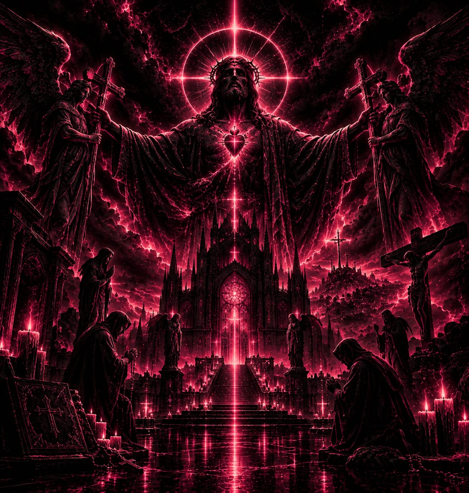
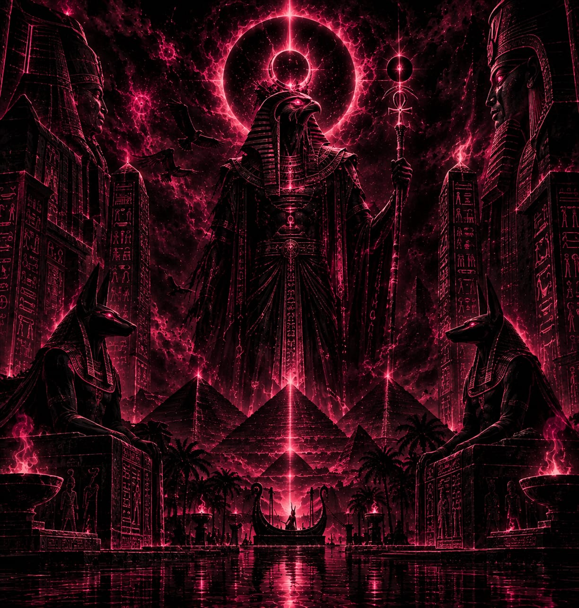

ℝ𝔼𝔾𝕀𝕊𝕋ℝ𝕆 #𝟘𝟙
𝓒𝓡𝓘𝓢𝓣𝓘𝓐𝓝𝓘𝓢𝓜𝓞
𝑼𝒏𝒂 𝒕𝒓𝒂𝒅𝒊𝒄𝒊ó𝒏 𝒓𝒆𝒍𝒊𝒈𝒊𝒐𝒔𝒂 𝒄𝒆𝒏𝒕𝒓𝒂𝒅𝒂 𝒆𝒏 𝒍𝒂 𝒇𝒊𝒈𝒖𝒓𝒂 𝒅𝒆 𝑱𝒆𝒔𝒖𝒄𝒓𝒊𝒔𝒕𝒐, 𝒔𝒖𝒔 𝒆𝒏𝒔𝒆ñ𝒂𝒏𝒛𝒂𝒔, 𝒍𝒐𝒔 𝒕𝒆𝒙𝒕𝒐𝒔 𝒔𝒂𝒈𝒓𝒂𝒅𝒐𝒔 𝒚 𝒍𝒂 𝒓𝒆𝒍𝒂𝒄𝒊ó𝒏 𝒆𝒏𝒕𝒓𝒆 𝒍𝒂 𝒉𝒖𝒎𝒂𝒏𝒊𝒅𝒂𝒅 𝒚 𝒍𝒐 𝒅𝒊𝒗𝒊𝒏𝒐.
╭𝗘𝗫𝗣𝗟𝗢𝗥𝗔𝗥 𝗖𝗨𝗟𝗧𝗨𝗥𝗔╮ARCHIVO IV · CIVILIZACIONES Y TRADICIONES
𝑼𝒏 𝒓𝒆𝒄𝒐𝒓𝒓𝒊𝒅𝒐 𝒑𝒐𝒓 𝒍𝒂𝒔 𝒄𝒓𝒆𝒆𝒏𝒄𝒊𝒂𝒔, 𝒍𝒐𝒔 𝒎𝒊𝒕𝒐𝒔 𝒚 𝒍𝒂𝒔 𝒕𝒓𝒂𝒅𝒊𝒄𝒊𝒐𝒏𝒆𝒔 𝒒𝒖𝒆 𝒅𝒊𝒆𝒓𝒐𝒏 𝒇𝒐𝒓𝒎𝒂 𝒂 𝒍𝒂 𝒗𝒊𝒔𝒊ó𝒏 𝒆𝒔𝒑𝒊𝒓𝒊𝒕𝒖𝒂𝒍 𝒅𝒆 𝒍𝒂𝒔 𝒂𝒏𝒕𝒊𝒈𝒖𝒂𝒔 𝒄𝒊𝒗𝒊𝒍𝒊𝒛𝒂𝒄𝒊𝒐𝒏𝒆𝒔.
𝓔𝓧𝓟𝓛𝓞𝓡𝓐𝓡 𝓒𝓤𝓛𝓣𝓤𝓡𝓐𝓢
ℝ𝔼𝔾𝕀𝕊𝕋ℝ𝕆 #𝟘𝟙
𝑼𝒏𝒂 𝒕𝒓𝒂𝒅𝒊𝒄𝒊ó𝒏 𝒓𝒆𝒍𝒊𝒈𝒊𝒐𝒔𝒂 𝒄𝒆𝒏𝒕𝒓𝒂𝒅𝒂 𝒆𝒏 𝒍𝒂 𝒇𝒊𝒈𝒖𝒓𝒂 𝒅𝒆 𝑱𝒆𝒔𝒖𝒄𝒓𝒊𝒔𝒕𝒐, 𝒔𝒖𝒔 𝒆𝒏𝒔𝒆ñ𝒂𝒏𝒛𝒂𝒔, 𝒍𝒐𝒔 𝒕𝒆𝒙𝒕𝒐𝒔 𝒔𝒂𝒈𝒓𝒂𝒅𝒐𝒔 𝒚 𝒍𝒂 𝒓𝒆𝒍𝒂𝒄𝒊ó𝒏 𝒆𝒏𝒕𝒓𝒆 𝒍𝒂 𝒉𝒖𝒎𝒂𝒏𝒊𝒅𝒂𝒅 𝒚 𝒍𝒐 𝒅𝒊𝒗𝒊𝒏𝒐.
╭𝗘𝗫𝗣𝗟𝗢𝗥𝗔𝗥 𝗖𝗨𝗟𝗧𝗨𝗥𝗔╮
ℝ𝔼𝔾𝕀𝕊𝕋ℝ𝕆 #𝟘𝟚
𝑼𝒏𝒂 𝒄𝒊𝒗𝒊𝒍𝒊𝒛𝒂𝒄𝒊ó𝒏 𝒅𝒐𝒏𝒅𝒆 𝒍𝒐𝒔 𝒅𝒊𝒐𝒔𝒆𝒔, 𝒍𝒂 𝒎𝒖𝒆𝒓𝒕𝒆, 𝒆𝒍 𝒋𝒖𝒊𝒄𝒊𝒐 𝒅𝒆𝒍 𝒂𝒍𝒎𝒂 𝒚 𝒍𝒂 𝒗𝒊𝒅𝒂 𝒅𝒆𝒔𝒑𝒖é𝒔 𝒅𝒆 𝒍𝒂 𝒎𝒖𝒆𝒓𝒕𝒆 𝒐𝒄𝒖𝒑𝒂𝒓𝒐𝒏 𝒖𝒏 𝒍𝒖𝒈𝒂𝒓 𝒇𝒖𝒏𝒅𝒂𝒎𝒆𝒏𝒕𝒂𝒍.
╭𝗘𝗫𝗣𝗟𝗢𝗥𝗔𝗥 𝗖𝗨𝗟𝗧𝗨𝗥𝗔╮ℝ𝔼𝔾𝕀𝕊𝕋ℝ𝕆 #𝟘𝟛
𝑼𝒏 𝒖𝒏𝒊𝒗𝒆𝒓𝒔𝒐 𝒎𝒊𝒕𝒐𝒍ó𝒈𝒊𝒄𝒐 𝒉𝒂𝒃𝒊𝒕𝒂𝒅𝒐 𝒑𝒐𝒓 𝒅𝒊𝒐𝒔𝒆𝒔, 𝒕𝒊𝒕𝒂𝒏𝒆𝒔 𝒚 𝒉é𝒓𝒐𝒆𝒔 𝒒𝒖𝒆 𝒓𝒆𝒑𝒓𝒆𝒔𝒆𝒏𝒕𝒂𝒃𝒂𝒏 𝒍𝒂𝒔 𝒇𝒖𝒆𝒓𝒛𝒂𝒔 𝒅𝒆 𝒍𝒂 𝒏𝒂𝒕𝒖𝒓𝒂𝒍𝒆𝒛𝒂 𝒚 𝒍𝒐𝒔 𝒄𝒐𝒏𝒇𝒍𝒊𝒄𝒕𝒐𝒔 𝒉𝒖𝒎𝒂𝒏𝒐𝒔.
╭𝗘𝗫𝗣𝗟𝗢𝗥𝗔𝗥 𝗖𝗨𝗟𝗧𝗨𝗥𝗔╮ℝ𝔼𝔾𝕀𝕊𝕋ℝ𝕆 #𝟘𝟜
𝑼𝒏𝒂 𝒕𝒓𝒂𝒅𝒊𝒄𝒊ó𝒏 𝒎𝒐𝒏𝒐𝒕𝒆í𝒔𝒕𝒂 𝒄𝒐𝒏 𝒖𝒏𝒂 𝒑𝒓𝒐𝒇𝒖𝒏𝒅𝒂 𝒉𝒆𝒓𝒆𝒏𝒄𝒊𝒂 𝒆𝒔𝒑𝒊𝒓𝒊𝒕𝒖𝒂𝒍, 𝒇𝒊𝒍𝒐𝒔ó𝒇𝒊𝒄𝒂 𝒚 𝒄𝒖𝒍𝒕𝒖𝒓𝒂𝒍, 𝒗𝒊𝒏𝒄𝒖𝒍𝒂𝒅𝒂 𝒂𝒍 𝑪𝒐𝒓á𝒏 𝒚 𝒂 𝒍𝒂 𝒕𝒓𝒂𝒅𝒊𝒄𝒊ó𝒏 𝒑𝒓𝒐𝒇é𝒕𝒊𝒄𝒂.
╭𝗘𝗫𝗣𝗟𝗢𝗥𝗔𝗥 𝗖𝗨𝗟𝗧𝗨𝗥𝗔╮ℝ𝔼𝔾𝕀𝕊𝕋ℝ𝕆 #𝟘𝟝
𝑼𝒏𝒂 𝒅𝒆 𝒍𝒂𝒔 𝒕𝒓𝒂𝒅𝒊𝒄𝒊𝒐𝒏𝒆𝒔 𝒓𝒆𝒍𝒊𝒈𝒊𝒐𝒔𝒂𝒔 𝒎á𝒔 𝒂𝒏𝒕𝒊𝒈𝒖𝒂𝒔, 𝒎𝒂𝒓𝒄𝒂𝒅𝒂 𝒑𝒐𝒓 𝒅𝒊𝒐𝒔𝒆𝒔, 𝒄𝒓𝒊𝒂𝒕𝒖𝒓𝒂𝒔 𝒔𝒐𝒃𝒓𝒆𝒏𝒂𝒕𝒖𝒓𝒂𝒍𝒆𝒔, 𝒓𝒆𝒍𝒂𝒕𝒐𝒔 𝒅𝒆 𝒄𝒓𝒆𝒂𝒄𝒊ó𝒏 𝒚 𝒎𝒊𝒕𝒐𝒔 𝒔𝒐𝒃𝒓𝒆 𝒆𝒍 𝒅𝒆𝒔𝒕𝒊𝒏𝒐.
╭𝗘𝗫𝗣𝗟𝗢𝗥𝗔𝗥 𝗖𝗨𝗟𝗧𝗨𝗥𝗔╮